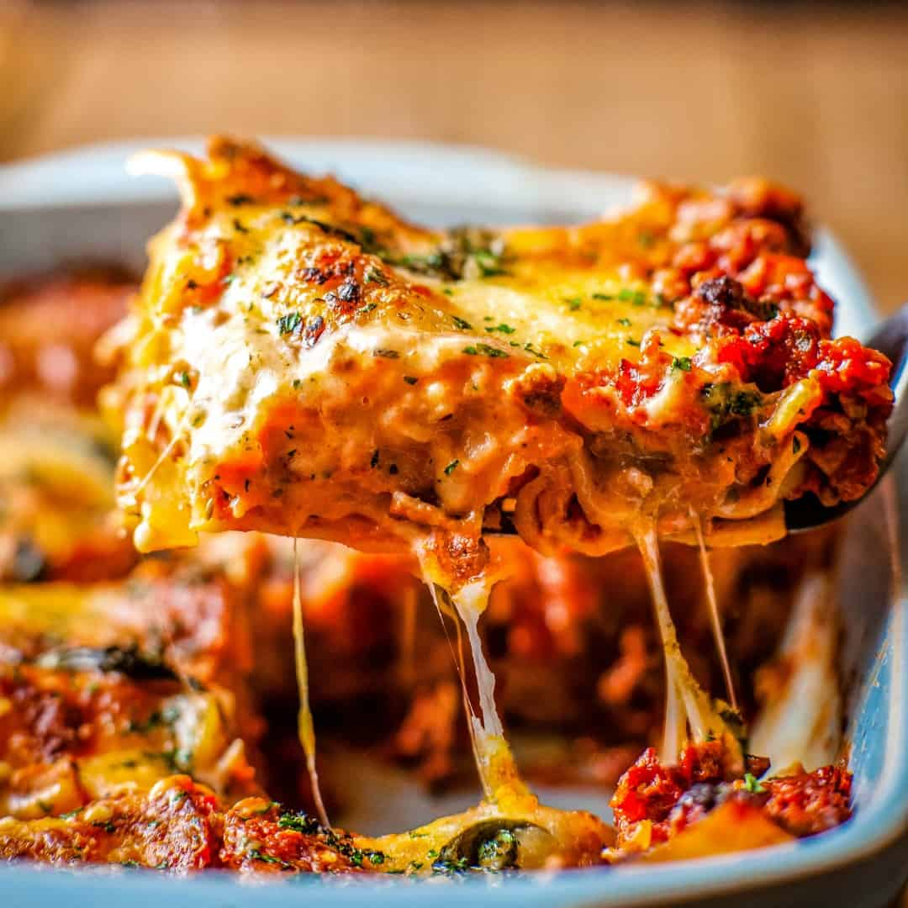

Lasagna

Simple Beef Lasagna
Classic weeknight lasagna with meat sauce and ricotta.
Ingredients
- 12 lasagna noodles (no-boil)
- 1 pounds ground beef
- 24 ounces marinara sauce
- 15 ounces ricotta cheese
- 1 large egg
- 3 cups shredded mozzarella
- 0.5 cups grated parmesan
- 2 garlic cloves, minced
- 1 teaspoons salt
Steps
- Preheat oven: Preheat oven to 375°F (190°C).
- Brown the beef: Brown 1 pounds ground beef with 2 garlic cloves, minced and 1 teaspoons salt in a skillet, drain fat, then stir in 24 ounces marinara sauce.
- Mix cheese filling: Combine 15 ounces ricotta cheese, 1 large egg, and half of 0.5 cups grated parmesan.
- Layer: In a 9x13 dish: thin layer of sauce, 3 noodles, ricotta mix, mozzarella, sauce. Repeat 3 times, finishing with sauce, remaining mozzarella from 3 cups shredded mozzarella, and remaining parmesan.
- Bake covered: Cover with foil and bake.
- Bake uncovered: Remove foil and bake until bubbly and golden.
- Rest: Let rest before slicing.
Home